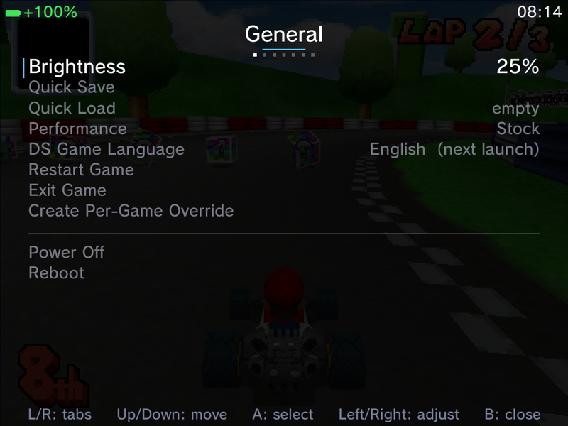
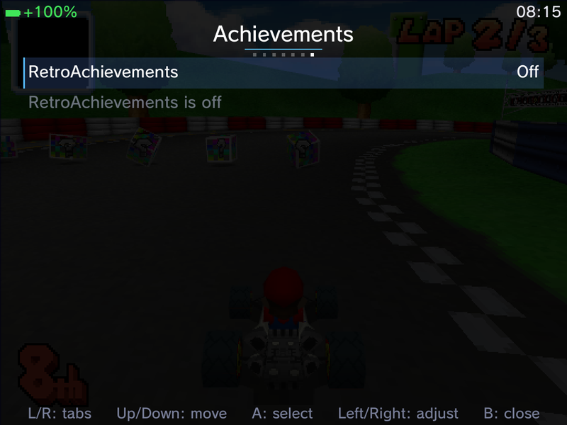
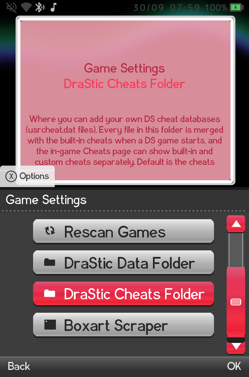
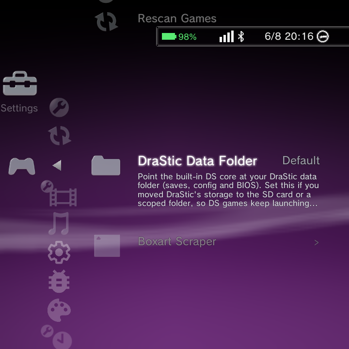

DraStic Nano is the Nintendo DS emulator built right into GammaOS Nano. It runs your DS games straight from the Game menu with a fast boot and a friendly in-game menu. This page is the complete reference: how it launches, where your saves live, its controls, and every option in the in-game menu.
What DraStic Nano is
DraStic Nano embeds the DraStic DS core directly inside Nano, so there is no separate app to open and games boot quickly. Everything it needs ships inside GammaOS itself: the emulator libraries, the BIOS and firmware files, the game database and the default shaders are all part of the system. You do not need the DraStic app installed.
Nintendo DS games (.nds files, or zipped .zip ROMs) launch through DraStic Nano automatically from the Game menu. There is nothing to select or configure to make this happen. While a zipped ROM is being unpacked, a loading screen with a progress bar shows instead of a blank panel.
Your own data (saves, save states, shaders, cheat files and per-game settings) lives in one ordinary folder on your storage, drastic-nano at the top of internal storage (/sdcard/drastic-nano). See Save location and your DraStic folder.
Coming from the DraStic app
If the stock DraStic app is still installed and holds saves or save states, the first DS game you launch asks Move DraStic saves to the SD card? with Move and Not now. Choose Move and your saves and save states are moved into the drastic-nano folder before the game boots, so an old autosave is what you resume.
Chose Not now, or the app wrote more files later? The in-game General page keeps an Import DraStic saves row (with a file count) for as long as there is anything left to bring across. Your existing DraStic settings (video options, key bindings, DS user data) are also carried over once, on that first launch.
After that, DraStic Nano keeps its own settings. Changing an option in the stock DraStic app no longer changes DraStic Nano, and the other way round.
Quick start: your first DS game
- Drop your
.nds(or.zip) files in theROMs/ndsfolder and open the Game menu. See Adding Games. - Pick your game and press A to launch. There is no BIOS to find and nothing to set up first.
- While playing, give Back a short tap to open the in-game menu. It opens on the General page with the everyday actions, and the game pauses while the menu is open.
- To leave the game, hold Back. The sound mutes straight away and you are back on the Nano home in about two seconds, on the same system you launched from.
Same button, two lengths of press: a short tap of Back opens the menu, a hold exits the game.
No BIOS needed
Good news: DraStic does not need a BIOS from you. The files it uses ship inside GammaOS, so Nintendo DS games run straight away with nothing to find or copy. This is unlike PlayStation, PS2, or Dreamcast, which do need you to supply a BIOS (see Emulators).
The only "firmware" choice you might want to change is the DS console language, which many games use to pick their own language. Set it with DS Game Language on the General page (see General).
In-game controls
The DS face buttons, D-pad, shoulder buttons, and Start/Select map to your handheld one to one (Up, Down, Left, Right, A, B, X, Y, L, R, Start, Select). The DS bottom (touch) screen is driven by your touch panel, or by a virtual touch cursor if your device has no touchscreen.
| Input | Action |
|---|---|
| Short Back tap | Open or close the in-game menu (the game pauses while it is open) |
| Back hold | Exit the game and return to the Nano home (about 2 seconds, audio muted at once) |
| R2 (default) | Fast forward on or off (press to toggle) |
| L2 (default) | Swap the two DS screens |
| R3 (default) | Virtual touch cursor on or off |
| Power tap | Sleep the device |
| Power hold (about 1.5 s) | Open the in-game menu |
| Power hold (about 5 s) | Save and power off |
| Touch panel | Acts as the DS stylus on the bottom screen |
Every binding can be changed on the Controls page. For the full controls breakdown, see DraStic controls.
The in-game menu
Give the Back button a short tap to open the menu. The game pauses while it is open, and B (or another tap of Back) closes it and resumes play. Use L and R to switch pages, Up and Down to move, A to select and Left or Right to change a value.
The pages are: General, Save States, Video, Audio, Controls, Cheats and Achievements. The menu opens and scrolls without stalls, a toggle shows its new value the moment you change it, long names scroll when selected, and every label is translated into all 14 languages. On the RG DS and RG DS Plus the menu is drawn on the top screen.
General

The landing page, with the everyday actions in one place:
| Row | What it does |
|---|---|
| Brightness | Screen brightness, live. What you set here is kept after you leave the game and after a reboot (this also works on the TrimUI Brick). |
| Quick Save | Save to slot 0 and close the menu. Reads "Quick Save (overwrite)" when slot 0 already holds a state. |
| Quick Load | Load slot 0 and close the menu. Shows ready or empty. |
| Undo Quick Save / Undo Quick Load | Only shown when there is something to undo. See Undo Quick Save and Undo Quick Load. |
| Performance | Max, Stock or Powersave, applied at once. With a per-game override this becomes the game's own mode. |
| DS Game Language | Japanese, English, French, German, Italian or Spanish. Applies on the next launch, and a Restart game to apply changes row appears to do it straight away. |
| Restart Game | Reboot the game from its title screen. |
| Exit Game | Leave the game and return to the home, the same as holding Back. |
| Create Per-Game Override | Save this game's own settings. Becomes Delete Per-Game Override once one exists. See Per-game overrides. |
| Import DraStic saves | Only shown while the stock DraStic app still holds saves. See Coming from the DraStic app. |
| Power Off / Reboot | Save your place and power off or reboot. Both ask you to confirm first. |
Save States

- The first two rows name the folders your game saves and save states are written to, for example Saves folder: Internal storage/drastic-nano/saves. If you moved your DraStic folder to the SD card you can check it here at a glance.
- Auto Load State on Launch (default On) picks the game up from its most recent save state when you start it.
- Save to Slot 0 to Save to Slot 8, and Load from Slot 0 to Load from Slot 8 (each shows ready or empty).
Save State and Load State (slot 0) can also be bound to any button on the Controls page, so you can quick-save and quick-load without opening the menu at all.
With RetroAchievements hardcore mode on, loading a state is disabled (saving still works), as hardcore rules require.
Video

| Option | Choices / notes |
|---|---|
| Shader | The video filter. Includes DraStic's own filters and the 38 RetroArch LCD and CRT shaders. Applies live. |
| Screen Layout | Auto, Side by Side, Stacked or Single Screen |
| Layout Preset | Picture-in-picture and other presets, plus the two vertical presets below |
| PiP Opacity | Opaque, 80%, 60% or 40% |
| PiP Corner | Bottom Right, Bottom Left, Top Right or Top Left |
| Display Rotation | Normal, 90, 180 or 270 |
| Screen Scaling | Stretch, Native, Small + Big or Big + Small |
| Screen Gap | Off, Small, Medium or Large |
| Layout X Offset / Layout Y Offset / Layout Scale | Nudge and zoom the whole screen display |
| Reset Layout Tuning | Snap the three values above back to default |
| Swap Screens | Swap top and bottom |
| Half Resolution | Renders at half size and upscales, for fill-limited panels (default Off) |
| 16-bit Framebuffers | Composites in 16-bit colour to halve the display bandwidth (default Off, SurfaceFlinger path only) |
| FPS Counter | Shows the BLIT and GAME counters (default Off). See FPS counters. |
| Hi-res 3D | Doubles the internal 3D resolution, applies live |
| Threaded 3D | Runs the 3D alongside the CPU emulation, applies live |
| Disable Edge Marking | Applies live |
| GPU 3D Renderer (experimental) | Draws the 3D on the GPU. See GPU 3D renderer. |
| GPU 3D 4x Supersampling | Only shown while the GPU 3D renderer is on |
| Frame Sync / Low Latency Mode | Single-screen devices only. See Low-latency display. |
| Fast Forward Speed | 110% to 300% in steps of 10, then Uncapped (default 300%). See Fast forward. |
| Run-Ahead (Experimental) | Off by default. See Run-Ahead. |
Layout rows on the RG DS and RG DS Plus
On the dual-screen RG DS and RG DS Plus each DS screen has its own panel, so the single-window rows (Screen Layout, Layout Preset, PiP, Display Rotation, Screen Scaling, Screen Gap, the layout tuning rows, Swap Screens and Half Resolution) are hidden there. The Video page starts at Shader and FPS Counter, as in the screenshot above.
Adjustable screen layout
On single-screen devices, the Layout X Offset, Layout Y Offset and Layout Scale rows let you nudge and zoom the on-screen display to line it up exactly on your panel, on top of the chosen layout. Reset Layout Tuning snaps all three back to their defaults if you want to start over.
Vertical layout presets
Two vertical presets stack the two DS screens for portrait-friendly play:
- Big Top + Small stacks the two screens directly at fixed sizes (768x576 on top, 512x384 below), with a Swap toggle to put the small screen on top instead.
- Big Top + Tiny is a dynamic preset: it fits the big screen to the full panel width along the top, then gives whatever height is left to the tiny screen at the bottom. This adapts to your panel rather than using fixed sizes.
Audio
- Audio Latency, 0 to 4, applies on the next launch.
- Microphone on or off, for games that use the DS microphone.
- Mic Level, 0 to 2.
There is no separate volume row: the device volume keys control the game, and they respond straight away even in heavy scenes. See Low-latency audio.
Controls

- Restore Defaults puts every binding back to the standard layout.
- Analog Stick -> Stylus, Analog Deadzone, Portrait Controls (Off, 90, 180, 270) and Portrait Layout (Right Stick or D-Pad as Face).
- One binding row per action: X, Y, B, A, R, L, Start, Select, the four D-Pad directions, Screen Swap, Fast Forward, Menu, Touch Cursor, Save State, Load State and Close Lid. Select a row with A and press any button on your pad to bind it; press Left to clear it.
- Physical Lid Closes DS Lid (default Off). See Close Lid.
Cheats

- Search opens the keyboard to filter cheats by name.
- Show filters the list: All, Enabled, Disabled, Built-in or Custom.
- Cheat files shows how many of your own cheat files were found and the folder they are read from. See Your own cheat files.
- All Cheats enables or disables everything at once.
- The cheat list itself, grouped in folders. Folders that came from your own files are marked (custom).
- A Custom Cheats section with Add custom cheat... to type in your own codes.
Press L2 and R2 to page through a long cheat list. Cheats are disabled in RetroAchievements hardcore mode.
Achievements

- RetroAchievements on or off, and Log In / Account.
- Hardcore Mode.
- Achievement Progress Toast and Challenge Indicators can be turned on or off separately, so you can keep the unlock pop-ups without the on-screen challenge badges, or the other way round.
- View Leaderboards, and below it this game's achievement list.
GPU 3D renderer

GPU 3D Renderer (experimental) on the Video page draws the DS 3D scene on your device's GPU instead of the CPU. That frees CPU time for the emulation, so hi-res 3D no longer costs frames in heavy scenes.
- It works at native resolution and with Hi-res 3D, and supports DS-accurate blending, toon shading and stencil shadows.
- Its output matches DraStic's own CPU renderer closely, down to fine texture detail and lighting, and games such as Mario Kart DS, Pokemon White 2, GTA Chinatown Wars and Mario and Luigi render correctly.
- GPU 3D 4x Supersampling appears once the renderer is on. It smooths polygon edges with multisampling. It costs more GPU time, so turn shaders off while you use it.
- The 3D layer is shown one frame late (two on the heaviest frames) to keep a steady frame rate.
Turning either row on asks you to confirm first. The renderer is experimental: if a game looks wrong or stutters, open the Video page and turn GPU 3D Renderer (experimental) off to go back to the standard CPU renderer. It applies straight away, no restart needed. If only one game has trouble, a per-game override can keep it off for that game alone.
FPS counters

Turn on FPS Counter on the Video page to show two readouts in the top-right corner:
- BLIT is how often a picture is sent to the screen (the present rate).
- GAME is how many frames the emulated DS really produced (the emulation rate).
When both read 60 the game runs at full speed. A GAME figure below BLIT means the emulator itself is falling behind in that scene, even though the screen keeps refreshing smoothly. The counters work on the RG DS and RG DS Plus dual-screen path too.
Low-latency audio
DS game audio plays through an exclusive low-latency stream, cutting the delay between the game and your ears from roughly 300 ms to a few tens of milliseconds. Heavy scenes, state loads and steady play are free of clicks and pops, streamed speech (Golden Sun Dark Dawn) plays cleanly, and games that build echo through the DS sound hardware (Yoshi's Island DS, Animal Crossing, Mario Kart DS and others) sound as they do on a real DS.
- Wired headphones work in games: the sound moves to the jack when you plug in and back to the speakers when you unplug.
- RG DS Plus: the low-latency path now reaches the headphone jack as well as the speakers, so you keep the short delay with headphones plugged in. The speaker EQ is bypassed while headphones are in.
- Leaving a game mutes the audio at once, with no screech on the way out.
Low-latency display
RG DS and RG DS Plus: DS games present through a dedicated dual-panel path, locked to the panels' refresh with no extra copies and with its own input thread, so presses reach the screens with less lag. Heavy scenes pace to the panels' real refresh rate, which ends the periodic micro stutter in games like Pokemon White 2. There is nothing to set; the single-screen presenter rows are hidden on these devices.
On single-screen devices the Video page has two presenter options:
- Low Latency Mode shows each frame one refresh sooner (about 16 ms less lag), at the cost of some headroom in very heavy scenes. Turning it on switches Frame Sync off.
- Frame Sync holds each frame back by one refresh to keep the picture in step with the display. It adds a frame of lag, so leave it off if you use Low Latency Mode.
RetroArch LCD and CRT shaders

The Shader row includes faithful ports of 38 of RetroArch's handheld LCD and CRT shaders (crt-lottes-fast is one of them). They adapt to any screen size and keep their pattern at the right scale under Hi-res 3D, so the scanlines or LCD grid never double up. Shader changes apply live, so you can flick through them with Left and Right while the game runs behind the menu.
You can add your own DraStic shaders too: put them in the shaders folder inside your DraStic folder (drastic-nano/shaders by default) and they appear in the list next to the built-in ones.
Per-game overrides

Normally every setting is global: change it in one game and every DS game uses it. A per-game override gives one game its own settings.
- Start the game and set it up the way you like.
- Open General and choose Create Per-Game Override, then Confirm.
- From now on, any setting you change while playing that game applies to that game only. Your global settings are not touched.
The override snapshots every setting: video options (shader, Hi-res 3D, GPU 3D, layout), audio, key bindings and controls, fast forward speed, Run-Ahead, the lid option, the RetroAchievements toast and badge toggles, DS Game Language and the Performance mode. It is stored as a small file, drastic-nano/overrides/<game name>.cfg inside your DraStic folder; the confirmation shows the exact path.
To go back, open General and choose Delete Per-Game Override. The file is removed and the global settings return at once, with no restart. If an override file cannot be read (for example it is damaged), the row reads Per-Game Override: Unreadable, the global settings are used, and you can delete it and create a fresh one.
Performance mode per game. When a game with an override starts, the device switches to that game's Performance mode, and the global mode you had before comes back when you exit. This also works if the game crashes or the device reboots mid-game, so you never get stuck in one game's mode.
Undo Quick Save and Undo Quick Load
Pressed Quick Save or Quick Load by mistake? The General page can put it right:
- Undo Quick Save puts back the slot 0 state that the last quick save overwrote.
- Undo Quick Load takes you back to where you were just before the last quick load.
Each row only appears when there is something to undo. Quick Save and Quick Load themselves also sit on the General page, one press away, and close the menu so you are straight back in the game.
Fast forward
Press the Fast Forward button (R2 by default) once to speed the game up and again to return to normal speed. While it is on, an amber >> badge shows in the top-left corner, and your controls keep responding normally.

Fast Forward Speed on the Video page sets how fast fast-forward goes: from 110% to 300% of normal speed in steps of 10, or Uncapped for as fast as the device can run. The default is 300%. Every frame is still drawn at the capped speed (nothing is skipped), and games that show their own screen captures stay free of garbage and flicker, including after you return to normal speed. The new speed applies the next time you turn fast forward on.
Run-Ahead (experimental)
Run-Ahead (Experimental) on the Video page is off by default. When on, the emulator runs one frame ahead so a button press can reach the screen up to two frames sooner.
It is adaptive: it only runs ahead when there is time to spare, so very heavy scenes simply fall back to normal play instead of slowing down. It pauses while fast-forwarding and in RetroAchievements hardcore mode. Turning it on asks you to confirm and explains these limits. If a heavy game gets little benefit, turning Hi-res 3D off can give more consistent run-ahead.
Close Lid
Some DS games react to closing the console's lid (to pause, to trigger a puzzle, or to save).
- Close Lid on the Controls page is a bindable action. Bind it to a spare button, and each press closes or opens the emulated DS lid.
- Physical Lid Closes DS Lid (default Off) is for devices with a real clamshell lid. Off keeps the normal behaviour: closing the lid puts the device to sleep. On closes the DS lid in the game the moment you shut the device, so a quick close and open just pauses and resumes the game, while a longer close still sleeps the device.
Your own cheat files
DraStic Nano ships with a built-in cheat database, and you can add your own on top:
- Get an R4 style cheat database (a file like
usrcheat.dat). Any name works, and you can add as many as you like. - Copy it into the
cheatsfolder inside your DraStic folder (drastic-nano/cheatsby default). - Start the game. Your files are merged with the built-in cheats when a DS game starts.

To keep your cheat files somewhere else, pick a folder at Settings > Game Settings > DraStic Cheats Folder. It shows Default until you choose one, and Use Default Folder switches back.
In the game, the Cheats page shows how many cheat files it found, marks folders that came from your files with (custom), and its Show filter can list Built-in or Custom cheats on their own.
Save location and your DraStic folder
DraStic Nano keeps everything that is yours in one folder, drastic-nano on internal storage by default:
| Folder | What is in it |
|---|---|
drastic-nano/saves |
Your in-game saves |
drastic-nano/savestates |
Save states, including Quick Resume's autosave |
drastic-nano/shaders |
Your own shaders (added to the built-in list) |
drastic-nano/cheats |
Your own cheat files |
drastic-nano/overrides |
Per-game override files |
You can move this folder anywhere you can browse to: another folder on internal storage, the SD card, a USB drive or a network share. Open Settings > Game Settings > DraStic Data Folder and pick the folder. The row shows Default until you choose one, and Use Default Folder switches back.

Picking a new folder does not move files that are already in the old one. Copy your existing saves, savestates and any shaders or overrides across yourself (with MTP, ADB Explorer or a network share), then check the folder names on the in-game Save States page.
Because the DraStic folder is ordinary storage, a tool like Syncthing can mirror it to a PC or another device, so your DS saves follow you between machines. Point Syncthing at the same DraStic folder on each device and let it keep them in sync. See Network Shares.
Quick Resume
With Quick Resume on (it is off by default; turn it on at Settings > Game Settings > Quick Resume or in the Quick Menu), powering off or rebooting while in a DS game saves your place to DraStic's reserved autosave slot. On the next boot, Nano relaunches straight back into your paused game with no load screen.
There is a built-in crash guard: if an autosave is truncated or too small, it is set aside and the game boots fresh instead of loading a corrupt state.
Quick Resume is skipped for RetroAchievements hardcore mode, which requires a fresh boot.
For the full picture, including how it works for RetroArch, see the Quick Resume page.
Recommended defaults
On the dual-screen RG DS and RG DS Plus, GammaOS sets sensible defaults for you, applied without overwriting your own choices:
| Option | Default |
|---|---|
| Hi-res 3D | On |
| Threaded 3D | On |
| Disable Edge Marking | On |
Where DS options live
| Where | What you set |
|---|---|
| In-game menu (short Back) | Video, audio, controls, cheats, achievements, DS Game Language and per-game overrides |
| Settings > Game Settings > Quick Resume | Quick Resume on or off (also in the Quick Menu) |
| Settings > Game Settings > DraStic Data Folder | Where saves, save states, shaders and overrides live |
| Settings > Game Settings > DraStic Cheats Folder | Where your own cheat files are read from |